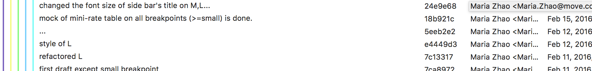
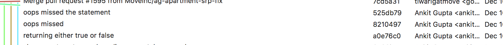
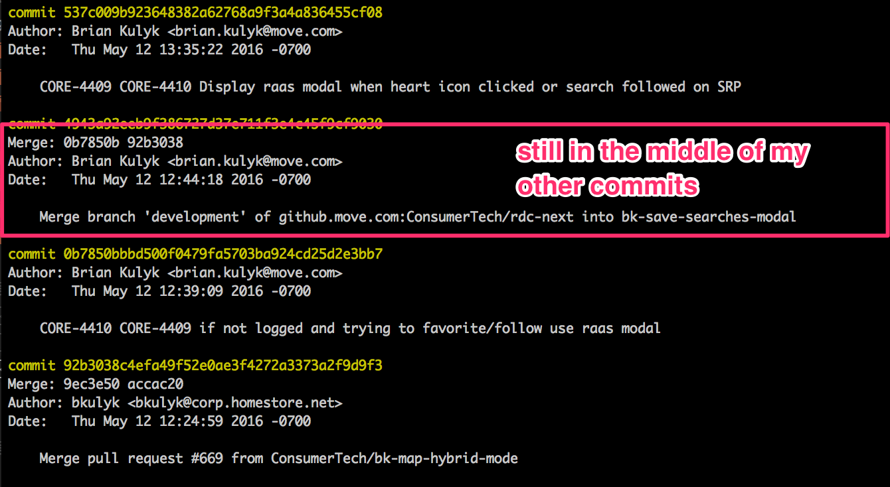
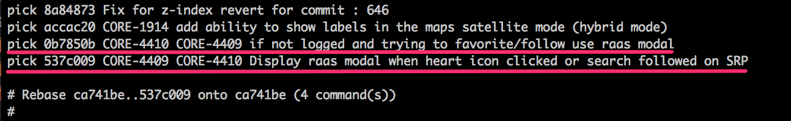
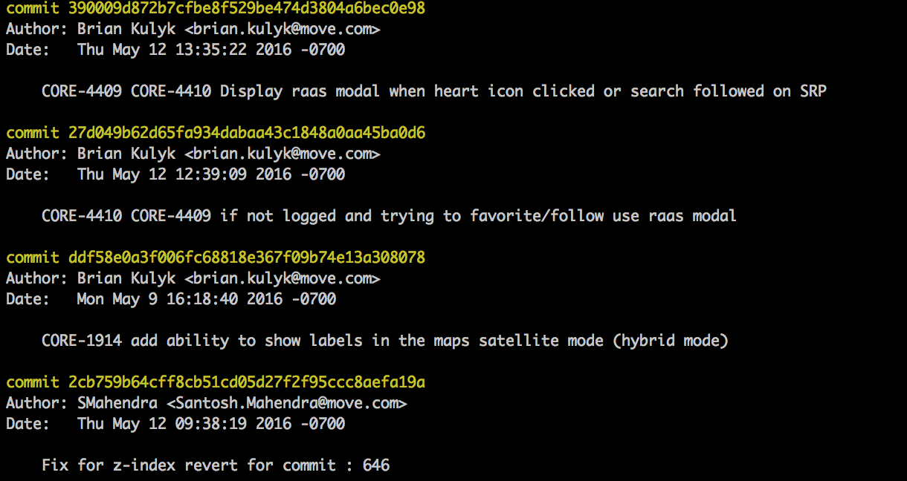
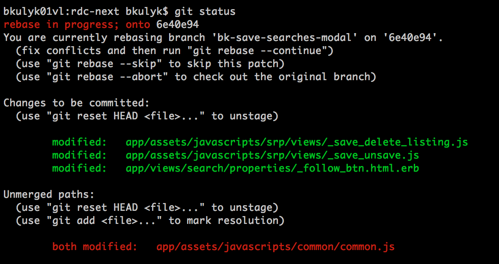
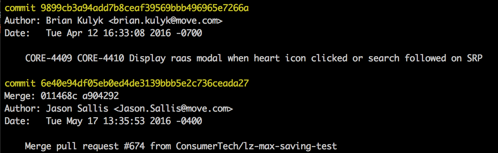

Hi
I'm Brian.
Let's talk about...
git rebase
It's scary.
The Problem
hard to read history:
- Commits out of order
- Comments are worthless
- Merge commits are in the way and don't add anything
- Hard to see why code was introduced, makes debugging difficult
asdf, fix stuff, .

worthless messages
why?
probably because
Let's look at some more quotes
(commit messages)
"Indentation"
— Serj Shine
"mroe"
— Lu Zou
"remove unused constant"
— Shehan Perera
"attempt to fail Jenkins again"
— Shaun Shapiro
"..."
— Maria Zhao

"oops missed"
— Ankit Gupta

"vcr"
— everyone
What Can We Do?
Let's Squash Some of These Messy Commits
Count number of items we are working with in `git log`, use this for the following command
git rebase -i HEAD~4
squash
keep the first 'pick' and change the rest of the ones we want to squash to 's' or 'squash'[esq] :wq
Next you see a screen where you can a chance to correct your lazy messages
Enter a decent commit message for the sqashed commit
[esq] :wq
try including the jira number :)
I just really want to include this image.
Updated commit history
git log
Still kinda ugly though
now two comments about the same thing separated by other commits
git log Reorder Commits
`git rebase -i HEAD~4`
[esq] :wq
Commits reordered
[esq] :wq
Woot!!

git rebase -i HEAD~2
choose item(s) to be squashed
[esq] :wq
Success!
But... how could we have prevented having to reorder the commits?
'cause that part was hard :(
Don't `git merge development`
instead:
Use `git pull --rebase origin development`
what does this do?
- rewinds the git playhead back
- pulls the changes from remote branch
- rewrites your changes at the end
- makes happy
Let's try it
git log
git pull --rebase origin development
remove commits that are not in development, pull changes from development, reapply our commits at the end.
Updated git log
Looks like there were at ton of commits we forgot to reorder and squash
`git rebase -i HEAD~20`
select commits to squash
[esq] :wq
fix commit message
[esq] :wq
Final Commit History
`git push -f origin bk-save-searches-modal`
You may have noticed that the last commit has the wrong author, that's because I squashed my commits into one of Maria's. Now she gets all the credit for my hard work.
Amend Author
git commit --amend --author "Brian Kulyk <brian.kulyk@move.com>"
PR Merge Conflicts
When submitting my PR, I was warned about a merge conflict that needed to be dealt with manually. We can use rebase to fix this too.
git pull --rebase origin development
conflict
`git status` to see conflicted files
resolve the conflict manually
`git add .`
git rebase --continue`
Done
Notice there is no extra merge commit, which is good... 'cause those are gross.
Remember
use `git pull --rebase`